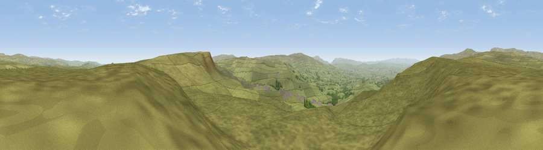

Viewpoint c10312_7714
#11528 in England · top 32% of its area beats it · —The view, rendered

A 360° render of this exact spot computed from the terrain model, tree cover and land cover — summer colours, afternoon light, calibrated against photographs of famous viewpoints. Real trees, hedges and buildings will differ in detail.
The panorama
Grey silhouette: terrain skyline in each direction (720 bearings, Earth curvature and refraction included). Dashed green: skyline with trees (+15 m) and buildings (+8 m) as obstacles. Blue strip: how far the ground is visible on each bearing.
Where the view opens
Wedge length = distance to the farthest visible ground on that bearing (vegetation-aware). Rings at 10, 25 and 50 km.
What fills the view
98% grassland · 1% woodland
Angular shares of the visible panorama (visual magnitude), not map area. Landscape diversity 0.04 (0–1 Shannon).
Key numbers
More beautiful places nearby
The staircase of upgrades: each row has a higher view potential than everything closer. Driving times are estimates from straight-line distance, calibrated against real road routing — check an actual route before setting out.
| Place | Direction | Drive | Score |
|---|---|---|---|
| Viewpoint c10288_7742 | SE · 2 km | ~5 min | 70.3 |
| Viewpoint c10212_7709 | S · 5 km | ~11 min | 73.4 |
| Viewpoint near Hilton | NW · 9 km | ~18 min | 74.3 |
| Viewpoint c10490_7651 | NNW · 9 km | ~18 min | 74.4 |
| Viewpoint c10485_7606 | NNW · 10 km | ~20 min | 75.6 |
| Mickle Fell | NNW · 10 km | ~20 min | 75.8 |
| Viewpoint c10024_7603 | SSW · 15 km | ~28 min | 76.9 |
| Great Dun Fell | NW · 22 km | ~37 min | 77.8 |
54.53569, -2.22212 · source: screening · position refined by local search. Computed location — check access rights before visiting.